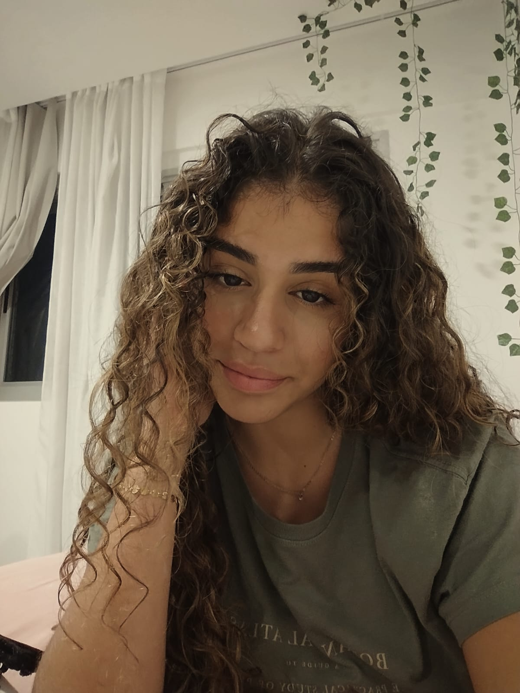

Olá! Me chamo Sofia Santana e sou aluna da UVV, curso Sistema da Informação e estou no 1° Periodo.
Nasci no Rio de Janeiro e vim para o ES as 10 anos, cresci mudando muito de colegio. Durante toda a minha vida estudantil eu estive envolvida em esporte acadêmicos, seja natação, handebol, basquete, futsal, volei, etc... passei todo o periodo escolar envolvida em esportes e ainda assim sempre tirei notas altas. Sempre fui muito participativa com liderança dentro e fora do colegio! Além disso, faço parte de muitos grupo de liderança de minha igreja tambem.
clique aqui para ver mais sobre a cidade do Rio de Janiero.
Não tive experiencias no mercado de trabalho ainda, mas participei de muitos eventos/ trabalhos voluntários não remunerados durante o ensino médio. Possuo habilidades de liderança, fui lider de turma durante 2024-2025, fui lideres de grêmmio estudantil, liderei a organização dos JIFRAN (jogos entre turmas ) de 2025, Participei da liga jovem do Senai e tambem fiz parte do time de basquete do colegio como capitã.
Nas horas vagas, gosto de acompanhar futebol, torcendo pelo Fluminense e pelo FC Barcelona. Gosto de fazer muitas coisas, dentre elas surfar, fui tambem uma nadadora pelo colegio no ensino fundamental e ganhei um nacional no RJ correr, fui tambem uma jogadora de basquete federada pela FECADE ganhando um campeonato regiononal e um estadual, tambem, gosto de desenhos e grafitagem, leitura, etc...
Estudei no Colegio Estudal Francelina Carneiro Sétubal, durante 5 anos e foi o meu ultimo colegio. Durante o meu ensino médio eu cursei Transações Imobiliarias como curso tecnico.
fui engajada na maioria dos projtos acadêmicos que tinham no colegio, temos OBMEP ( fui aprovada 2° fase ), Olimpiada de história ( fui ate a fase 5/6 ), projeto liga jovem senai, Simulação mini onu SEDU, Organização e coordenação dos times dos jogos na rede 2025, etc...
temos 5 materias presenciais e uma EAD, sendo elas:
Mais informações sobre o curso
Atualmente no primeiro semestre de TI, meu foco principal é a especialização em Desenvolvimento Back-end. Utilizo a disciplina e a liderança que desenvolvi como esportista e no setor imobiliário para dominar as arquiteturas de servidores e bancos de dados. Meu objetivo é atuar em grandes empresas de tecnologia (Big Techs), onde eu possa resolver problemas complexos em escala global e gerenciar sistemas de alta performance.
Desenvolvo sites para restaurantes, academias, livrarias e outros modelos
| Tipo de Página | Tecnologias | Valor Estimado |
|---|---|---|
| 1 a 2 páginas | Landing Page/ Site simples | R$ 400,00 a R$800,00 |
| 3 a 5 páginas | Site Institucional Básico | R$ 1.100,00 a R$2.400,00 |
| 5 páginas ou mais | Site completo/ estruturado | A partir de 3.000,00 |
| Tipo de Página | Descrição Técnica | Valor Estimado |
|---|---|---|
| Página Dinâmica | Páginas que interagem com o usuário, possuem scripts (JavaScript), animações complexas e consumo de APIs. | R$ 1.700,00 a R$ 3.400,00 |
| Super Avançada | Sistemas completos com banco de dados, área administrativa, login de usuários e alta complexidade técnica. | A partir de R$ 5.000,00 |
Possuo experiência prática no setor de transações imobiliárias adquirida durante o Ensino Médio, onde desenvolvi habilidades sólidas em negociação, atendimento ao cliente e visão de mercado. Como esportista dedicado, trago comigo disciplina, resiliência e uma capacidade natural para l iderança de equipes e resolução de problemas em ambientes dinâmicos, minhas habilidade técnicas tambem incluem desenvolvimento com HTML e CSS